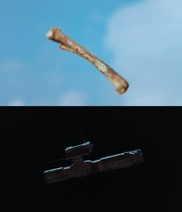

2001: A Space Odyssey, the Match Cut (Bone and Satellite)
Stanley Kubrick · 1968 · Film, colour (two frames)
In copyright. Look and learn: shown for study, not for download.
The bone-smashing scene was the only one not filmed in a studio and the last live-action scene shot. A small platform was built in a field near the studio so the camera could shoot upward against the sky and avoid passing traffic. Moonwatcher is played by the mime Daniel Richter, whose troupe played most of the other man-apes. Kubrick then spent from June 1966 to March 1968 on the film's 205 special-effects shots. The production finished 16 months behind schedule.